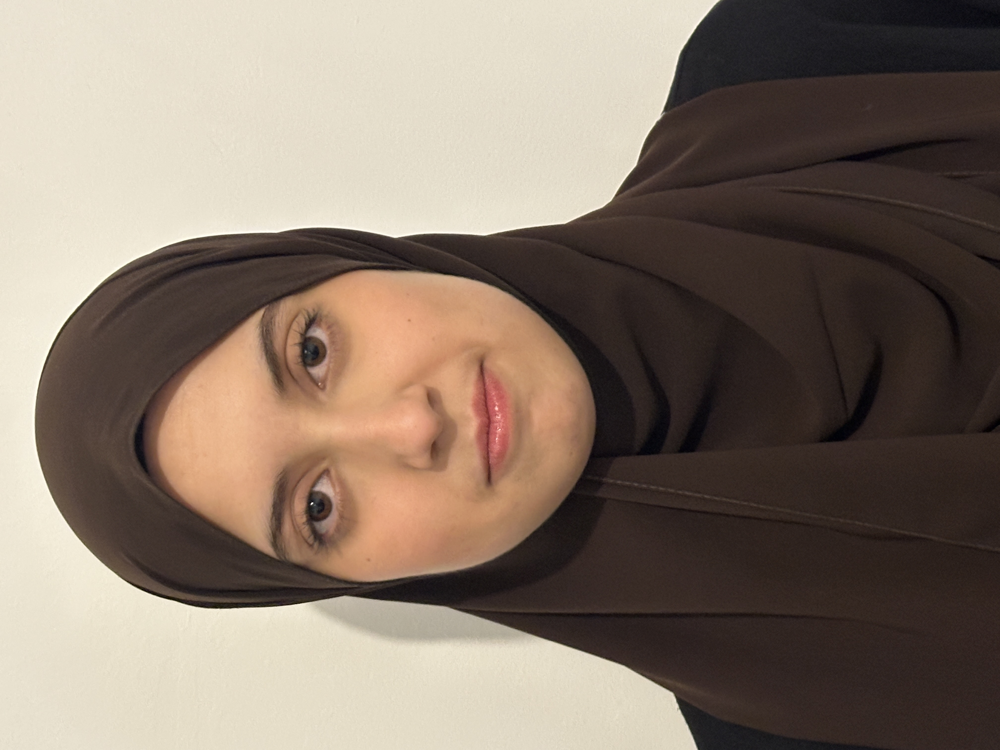

Commerciale B2B · Business Development · International
Au cours de mon BUT Techniques de Commercialisation, j'ai développé une approche du commerce avant tout tournée vers le terrain. Entre la prospection intensive chez SMC-CSE, une mission marketing en Malaisie et la création d'une startup de A à Z, j'ai appris à évoluer dans des contextes variés, concrets et exigeants.
À partir de septembre 2026, j'intégrerai le Programme Grande École de GEM Grenoble, en spécialité Business Development & International Management.

De la formation aux expériences terrain, une progression constante.
Spécialité Gestion & Finance · Lycée Saint-Exupéry
Parcours BDMRC · IUT de Sceaux · Paris-Saclay
Animation commerciale, fidélisation client · Paris
Pro Events & Marketing · E-mailing B2B, étude de marché internationale
Prospection à froid, qualification leads, CRM · Paris
Programme Grande École · Business Development & International Management
Sélection de compétences clés issues de mon parcours universitaire et professionnel.
À l'issue de mon BUT TC, je me définis comme un profil commercial opérationnel, orienté résultats et naturellement ouvert à l'international. J'ai appris à prospecter dans des marchés de niche exigeants, à gérer des portefeuilles B2B et à m'adapter à des environnements multiculturels.
Ce qui me distingue : la combinaison d'un sens commercial terrain et d'une capacité à penser stratégiquement — business plan, étude de marché, modélisation financière.
Commerciale B2B opérationnelle, adaptable, orientée résultats et international
Prospection & qualification B2B · Analyse stratégique · Adaptabilité interculturelle · Création de valeur entrepreneuriale
Industriel · Technologie/IT · Commerce international
Master GEM Grenoble · Business Dev & International Management · Sept. 2026
Une opportunité, un projet, une collaboration ?
N'hésite pas à me contacter directement.